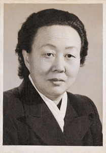
This photograph of my
mother was taken in 1967,
in memory of her 50th
birthday during the 'Great
Proletarian Cultural
Revolution'. I was nine
years old. I still remember
her dressing up in front of
a mirror to have her photo
taken.
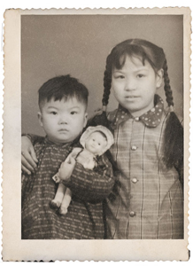
This photograph was taken
in 1960 when I was two
years old. The girl sitting
next to me was my
neighbor–everyone called
her Xiao Hua.
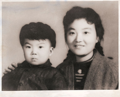
My eldest sister and me
in 1961.
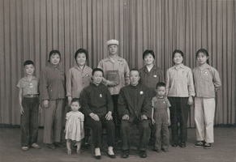
A photograph of "all family members' happiness". It was taken in 1969 when my brother was leaving home to join the 'Down to the Countryside Movement'. I was 11 years old (second row, far left).
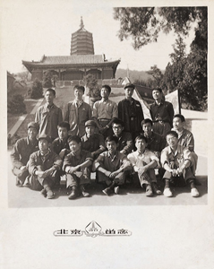
Classmates from the Interior Design Department, the School of Art and Craft of Tianjin, 1975 – 1978. There were eighteen boys in our class. This photo was taken at the Fragrant Hill Park, Beijing, when our program required us to complete a forty-day course of landscape painting and we lived in a classroom of Shi Jingshan Middle School located at Western Mountains of Beijing. It was during the summer vacation in 1976. (I'm in the last row, second from left).
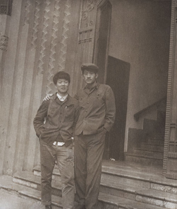
Wang Jie, a good friend and classmate at the specialty middle school, and me, in front of the Youth Palace of Tianjin in 1979. I worked as an art editor in The One- hundred Flowers Art Publishing House from 1978 to 1980. During this time, I read hundreds of books collected by the publisher.
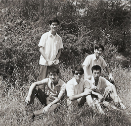
This photograph was taken in 1980 (I am in the middle) . I passed the entrance exam and enrolled into the Central Academy of Fine Arts. Before leaving Tianjin for Beijing, my good friends at the specialty middle school - Wang Xiaojie, Wang Jie, Sun Zhenwu and Li Enxiang - saw me off .
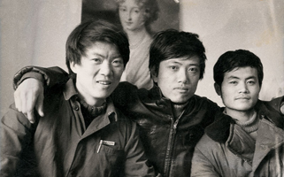
This photo was also taken in 1980, just after
I entered the Central Academy of Fine Arts.
Mr.Chen Danqing (centre) just completed
his famous eight workseries of Tibetan
paintings. (I am on theleft).
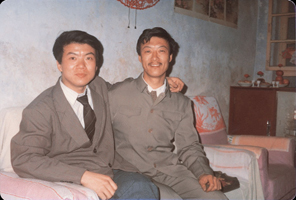
My elder brother and me in Tianjin in 1981. I was a college student with a light heart and fat body come home from Beijing for the Chinese Spring Festival. I didn't realise my brother's situation at that time. He had been living in northeast China for 10 years from 1969 to 1979 as an 'Intellectual Youth'. He went back to Tianjin with nothing - no job, nowhere to live, no wife - only two large boxes containing wood.
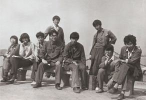
Eight classmates (I was
the second from right)
and our teacher, Zhao
Ruichun, from the Print
Media Department. The
photo was taken in 1982
at Taishan Mountain. We
were all poorly dressed
and with long hair.
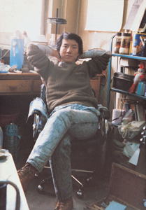
The photo of me was
taken in the dormitory. From
1985 to 1989, I was a
teacher at the High School
of Fine Art attached to the
Central Academy of Fine
Arts. I shared a room with
Wang Shuibo. By the look in
my eyes, you could see that
I was quiet for nothing.
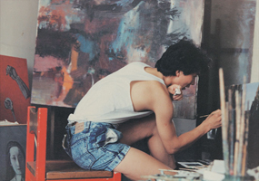
Me - working in the studio at the High School attached
to the Central Academy of Fine Arts around 1987.
I created some hopeless artworks. Now, when I think of
them, I'd have been better off enjoying life with good
food and drink, rather than wasting time making those
works!
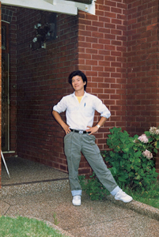
In November 1989, I
went to Australia. In this
photo, you can see I still
had a big dream! My
Taiwanese classmates
were surprised - a young
guy from mainland China,
dressed very fashionably.
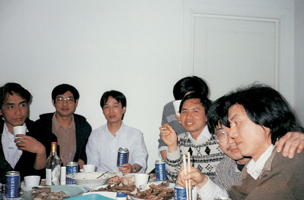
1990 - soon after I arrived in Sydney. I am on the far right, sitting next to me were Lao Deng, Wang Xu, Huang He and others. We all made a living by doing portrait painting on the street. We ate, chatted and looked at each other - it seemed we all had a tacit understanding of a sense of no future.
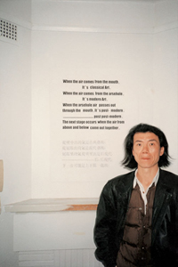
By 1993 I was so thin! I organized a group exhibition with my
Sydney friends. My work was text-based in Chinese and English
and read: When the air comes from the mouth, it's classical art.
When the air comes from the arse hole, it's modern art. When
the arsehole air passes out through the mouth, it's post-
modern...post, post-modern. The next stage occurs when the air
from above and below comes out together.
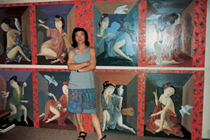
It took me one year to
complete the painting
titled The Beauties
captured in Time in
1994. Based on that
work, I received a grant
from the Australia
Council, which was a
much-needed boost in
terms of my standard of
living and career.
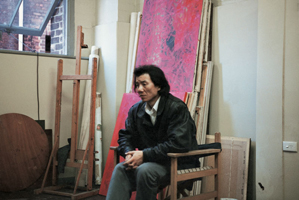
The photograph was
taken in some space in
Sydney, 1995. It shows
me, some production
materials and a few
unsold products in the
background. Time had
stopped… I felt helpless
and that there was no
way out of my situation.
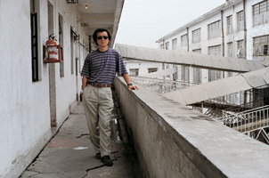
Seven years after leaving China I returned home. The photo shows the workers' sleeping quarters in a factory in Dong Guan, Guang Dong Province, where my elder brother worked. I visited him in this place and got the impression that everything there was like a 'mad meat grinder'. Three months later, after I returned to Australia, I got a call from home that my brother had died of a heart attack.
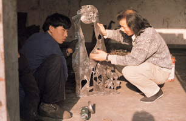
In 1998, I returned again to Tianjin. Our house was located next to an iron finishing factory where I created a series of 37 sheet-metal wall works. Sometime later, the National Gallery of Australia purchased seven of these works for its collection. I did not know this when I was making them. What I did know from working with the factory workers everyday was that conditions in that factory were so basic and the weather was extremely cold.
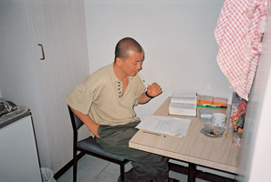
2000 was a 'blue sky year' for me. Through the whole year my good friend, Jin Hua, and I studied and fought for our future in Sydney. In a small kitchen I finished my thesis From Painting to Wall Sculpture for my Masters of Fine Arts, while the body of work Fragments, was collected by the Queensland Museum of Art.
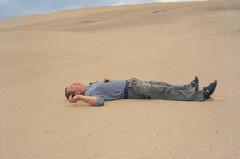
It was 1 December,
2000 when I passed the
oral defense. I lay on the
beach. It seemed the
most relaxing time for me
since I came to Australia
10 years ago.
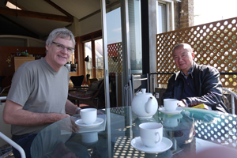
Richard Dunn and I,
my supervisor when I
undertook my
postgraduate study at
The Sydney College of
Arts from 1999 to 2000
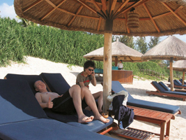
In December 2004, my wife Yunan and I enjoyed a holiday in San Ya on Hainan Island in the south of China.
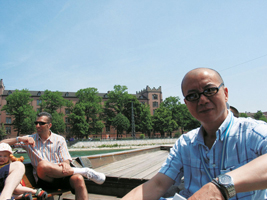
I was on a ferry
on the Rhine.
In 2006, my work
were exhibited ar
Art Basel,
Switzerland.
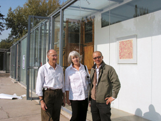
In 2006, The White Rabbit Chinese Contemporary Art Collection plan was launched. I was invited to be an art consultant on the project. The photo of Judith Neilson, Kerr Neilson, and me was taken at 798 Art District, Beijing.
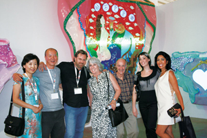
My work, Big Underpants was selected for the 'Best of
Discovery' at ShContemporary 08. From left to right: my wife, me,
Lorenzo Rudolf (Creator and Director of
ShContemporary), Judith Neilson, Kerr Neilson, their daughter,
Paris and the wife of Lorenzo Rudolf.
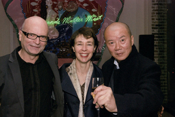
Brian Wallace, Director of Red Gate Gallery, my good friend Claire Roberts,
and me at the opening ceremony of the inaugural exhibition of The
White Rabbit Chinese Contemporary Art Collection on 1 August 2009.
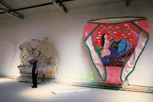
In my studio, 2009.
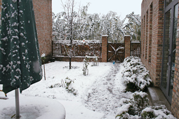
This photo is a memory. It
was taken in my studio
yard on 1 November 2009,
right after the first
snowfall in Beijing. The
studio was demolished by
the government in March
2010.
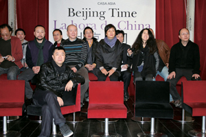
In December 2009, the group exhibition, Beijing Time, curated by Fang Zhenning, was opened in Madrid, Spain. This photo was taken at the press conference for the exhibition's opening (I am third from the left).
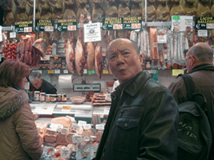
In December 2009 I was in a ham shop in Madrid-my face almost looked like one of the hams-didn't it?
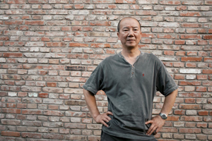